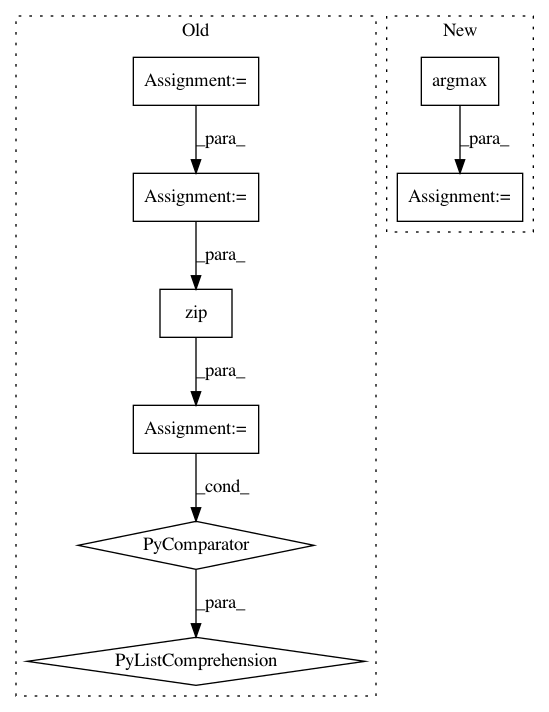

cb89711536f566f3ed7d121520fe32ad41ca83bc,finetune/association.py,Association,predict,#Association#Any#,136
Before Change
batch_probas.append(pred["sequence_probs"])
print("probs shape is ", pred["association_probs"].shape)
most_likely_associations = np.argmax(pred["association"], 0)
most_likely_class_id = pred["association"][range(len(most_likely_associations)), tuple(most_likely_associations)]
print([prob[idx, cls] for prob, idx, cls in zip(pred["association_probs"], most_likely_associations, most_likely_class_id)])
associations.append((
most_likely_associations,
After Change
labels.append(pred_labels)
batch_probas.append(pred["sequence_probs"])
pred["association_probs"] = self.prune_probs(pred["association_probs"], pred_labels)
most_likely_associations, most_likely_class_id = zip(*[np.unravel_index(np.argmax(a, axis=None), a.shape) for a in pred["association_probs"]])
associations.append((
most_likely_associations,
self.input_pipeline.association_encoder.inverse_transform(most_likely_class_id),
[prob[idx, cls] for prob, idx, cls in zip(pred["association_probs"], most_likely_associations, most_likely_class_id)]
In pattern: SUPERPATTERN
Frequency: 3
Non-data size: 8
Instances
Project Name: IndicoDataSolutions/finetune
Commit Name: cb89711536f566f3ed7d121520fe32ad41ca83bc
Time: 2019-01-11
Author: benlt@hotmail.co.uk
File Name: finetune/association.py
Class Name: Association
Method Name: predict
Project Name: scikit-multiflow/scikit-multiflow
Commit Name: becc945240a424bc08f74476c46f6a50b69928a5
Time: 2019-04-05
Author: andrecruz97@gmail.com
File Name: src/skmultiflow/meta/additive_expert_ensemble.py
Class Name: AdditiveExpertEnsemble
Method Name: fit_single_sample
Project Name: rasbt/mlxtend
Commit Name: aefd8bcf146d6de8f19fc0c3c5873880bc82886f
Time: 2015-02-23
Author: se.raschka@me.com
File Name: mlxtend/sklearn/ensemble.py
Class Name: EnsembleClassifier
Method Name: predict